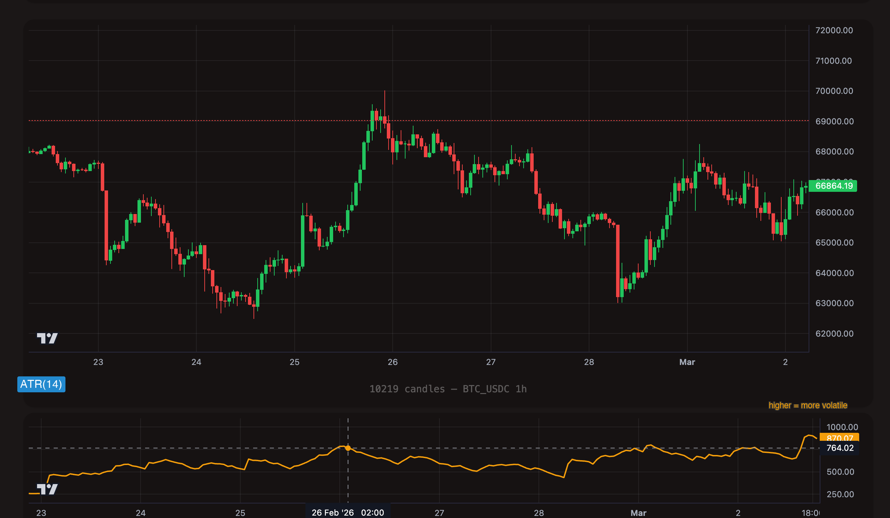

ATR -- Average True Range
Contents
Overview
Average True Range (ATR) measures the average range of price movement over the last N candles. It tells you how much the price typically moves per candle -- it measures volatility, not direction.
ATR uses "True Range" rather than simple high-low range. True Range accounts for gaps between candles by taking the maximum of:
- Current high minus current low
- Absolute value of current high minus previous close
- Absolute value of current low minus previous close
This ensures that a gap-up or gap-down is reflected as volatility even if the current candle's body is small.
The key insight about ATR:
- High ATR means the market is making large moves per candle -- high volatility. More risk and more reward per trade.
- Low ATR means the market is quiet -- low volatility. Prices are moving in small increments. Breakouts from low-ATR environments can be explosive.
- ATR says nothing about direction. A high ATR during a crash is the same as a high ATR during a rally. It only measures the size of moves, not whether they are up or down.

Format
atr_{period}
The period defines how many candles ATR averages the True Range over.
| Example | Period | Use Case |
|---|---|---|
atr_7 | 7 | Fast, reactive -- tracks recent volatility shifts quickly |
atr_14 | 14 | Standard -- the most common period, smooth and reliable |
atr_20 | 20 | Slower -- better for filtering out short-term volatility spikes |
Period range: 1 to 200.
Value range: 0 to infinity (always positive, denominated in the asset's price currency).
Understanding ATR Values
Unlike RSI or StochRSI, ATR values are not normalized to a fixed scale. They are expressed in the same units as the asset's price. This has a critical implication: ATR thresholds must be set relative to the asset and timeframe you are trading.
| Asset | Timeframe | Typical ATR(14) Range | What It Means |
|---|---|---|---|
| BTC/USDC | 1h | 200 -- 800 | BTC typically moves $200--$800 per hour |
| BTC/USDC | 1d | 1,000 -- 3,000 | BTC typically moves $1,000--$3,000 per day |
| ETH/USDC | 1h | 15 -- 60 | ETH typically moves $15--$60 per hour |
| SOL/USDC | 1h | 0.50 -- 3.00 | SOL typically moves $0.50--$3.00 per hour |
The values in the table above are illustrative and will vary with market conditions. During bull runs or crisis events, ATR can be 3--5x its typical range. Always check recent ATR values for your specific trading pair before setting thresholds. Use backtesting to calibrate.
Understanding Operators with ATR
Each operator behaves differently with ATR. Because ATR is a filter indicator (it describes market conditions, not trading signals), it is almost always used in combination with other triggers.
> (Greater Than) -- State-Based
What it does: The trigger is true on every candle where ATR is above the threshold.
On the chart: Volatility is elevated. The market is making large moves per candle. This trigger stays active for as long as ATR remains above the threshold.
[[actions.triggers]]
indicator = "atr_14"
operator = ">"
target = "500"
timeframe = "1h"
Typical use: "Only trade when the market is volatile enough." High ATR means there is enough price movement to make a trade worthwhile. If ATR is too low, the profit potential may not justify the spread and fees.
< (Less Than) -- State-Based
What it does: The trigger is true on every candle where ATR is below the threshold.
On the chart: Volatility is compressed. The market is quiet, moving in small increments. This is often called a "volatility squeeze."
[[actions.triggers]]
indicator = "atr_14"
operator = "<"
target = "200"
timeframe = "1h"
Typical use: Detect low-volatility environments. Extended periods of low ATR often precede explosive breakouts. Some strategies wait for a squeeze (low ATR) and then enter on a directional signal, expecting the breakout to produce outsized moves.
cross_above -- Event-Based
What it does: Fires once, at the exact candle where ATR transitions from below the threshold to above it. The previous candle had ATR <= the target, and the current candle has ATR > the target.
[[actions.triggers]]
indicator = "atr_14"
operator = "cross_above"
target = "400"
timeframe = "1h"
Typical use: Detect the moment volatility expands. This captures the transition from a quiet market to an active one -- a potential breakout is underway. Combine with a directional indicator to determine whether to go long or short.
cross_below -- Event-Based
What it does: Fires once, at the exact candle where ATR transitions from above the threshold to below it. The previous candle had ATR >= the target, and the current candle has ATR < the target.
[[actions.triggers]]
indicator = "atr_14"
operator = "cross_below"
target = "300"
timeframe = "1h"
Typical use: Detect the moment volatility contracts. This captures the transition from an active market to a quiet one. Can be used to exit positions if you only want to be in trades during volatile periods, or to start watching for squeeze-breakout setups.
= (Equal) -- Not Recommended for ATR
Why: ATR produces floating-point values that are rarely exactly equal to any specific number. Use > or < instead.
- Use
>to ensure volatility is high enough for profitable trading. This is the most common ATR operator. - Use
<to detect low-volatility squeezes that often precede breakouts. - Use
cross_above/cross_belowto detect the exact moment a volatility regime changes.
TOML Examples
Only Trade When Volatility Is Elevated
Use ATR as a gate on an RSI dip-buy strategy. Only enter when ATR confirms the market is moving enough to make the trade worthwhile.
[[actions]]
type = "open_long"
amount = "100 USDC"
[[actions.triggers]]
indicator = "rsi_14"
operator = "<"
target = "30"
timeframe = "1h"
[[actions.triggers]]
indicator = "atr_14"
operator = ">"
target = "500"
timeframe = "1h"
Low Volatility Squeeze Detection
Identify compression periods where the market is unusually quiet. When ATR drops below the threshold and then a directional breakout occurs (price breaks above the upper Bollinger Band), enter the trade.
[[actions]]
type = "open_long"
amount = "100 USDC"
[[actions.triggers]]
indicator = "atr_14"
operator = "<"
target = "200"
timeframe = "1h"
[[actions.triggers]]
indicator = "price"
operator = ">"
target = "bb_upper"
timeframe = "1h"
ATR Filter Combined with RSI Entry
A comprehensive dip-buying strategy: only buy when RSI is oversold, ATR shows sufficient volatility (so the bounce potential is meaningful), and the daily trend is bullish.
[[actions]]
type = "open_long"
amount = "100 USDC"
[[actions.triggers]]
indicator = "rsi_14"
operator = "<"
target = "35"
timeframe = "1h"
[[actions.triggers]]
indicator = "atr_14"
operator = ">"
target = "400"
timeframe = "1h"
[[actions.triggers]]
indicator = "sma_50"
operator = ">"
target = "sma_200"
timeframe = "1d"
Volatility Regime Change
Detect the moment volatility expands from a quiet period. When ATR crosses above the threshold, it signals that the market is waking up -- combine with momentum direction for entry.
[[actions]]
type = "open_long"
amount = "75 USDC"
[[actions.triggers]]
indicator = "atr_14"
operator = "cross_above"
target = "400"
timeframe = "1h"
[[actions.triggers]]
indicator = "roc_10"
operator = ">"
target = "1"
timeframe = "1h"
Tips
ATR measures the size of price moves, not their direction. An ATR of 500 during a crash is the same as an ATR of 500 during a rally. Never use ATR as a buy or sell signal on its own. It is a filter -- it tells you whether conditions are right for trading, not which direction to trade.
You cannot use the same ATR threshold for BTC and SOL. BTC's ATR(14) on the hourly chart might be 500, while SOL's might be 1.50. Always calibrate your ATR thresholds by checking the indicator's recent values for the specific pair and timeframe. Backtesting is the best way to find appropriate thresholds.
One of the most powerful ATR patterns is the squeeze breakout. When ATR drops to unusually low levels (the market goes quiet), it often precedes an explosive move. Combine low ATR (atr_14 < threshold) with a directional breakout trigger (e.g., price > bb_upper or roc_10 > 2) to catch these moves early.